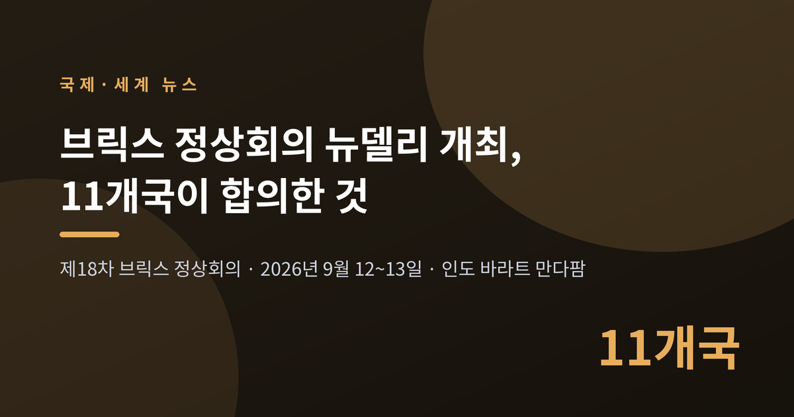
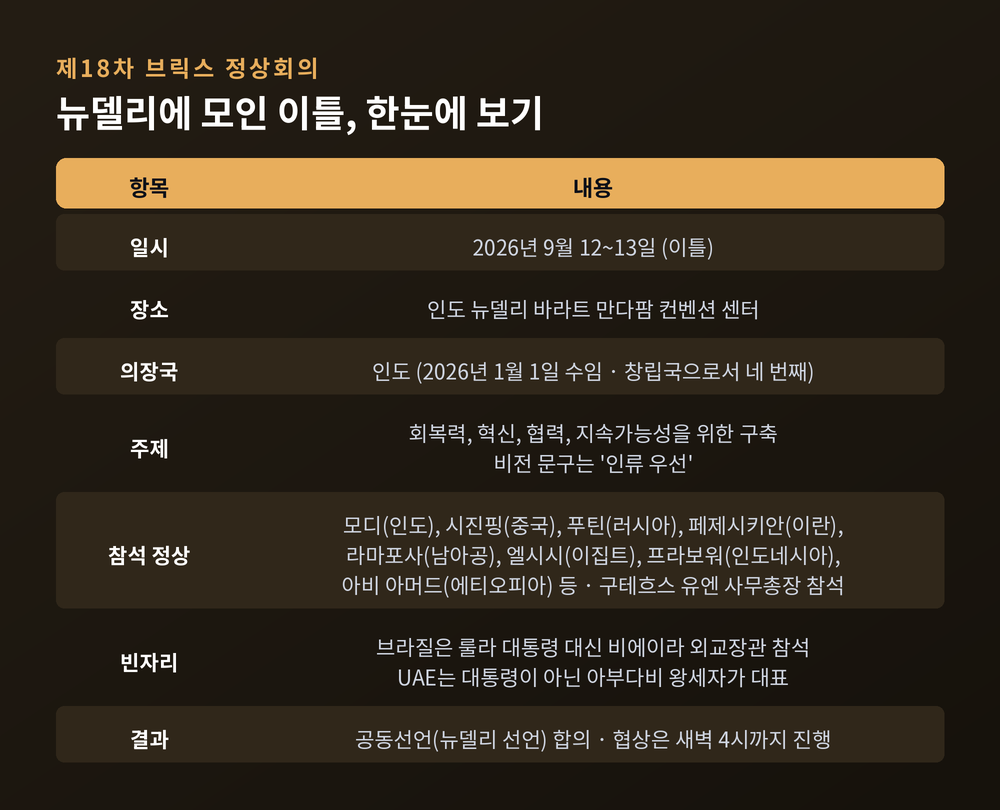
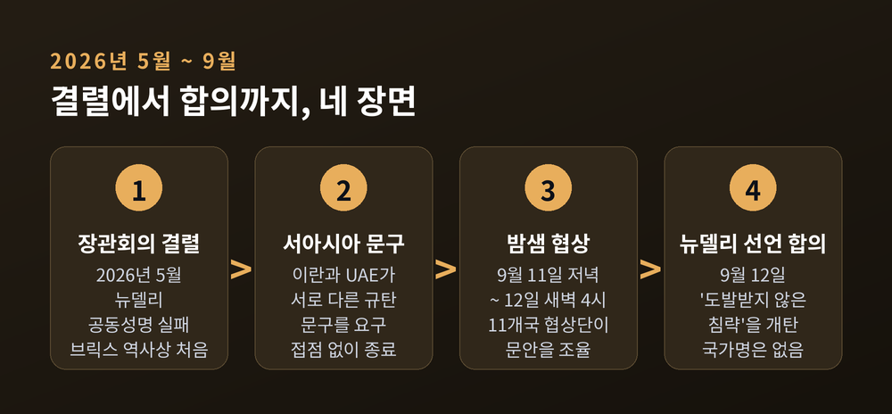
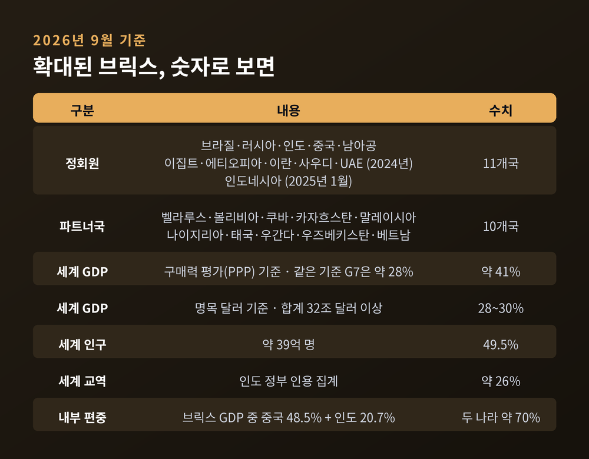
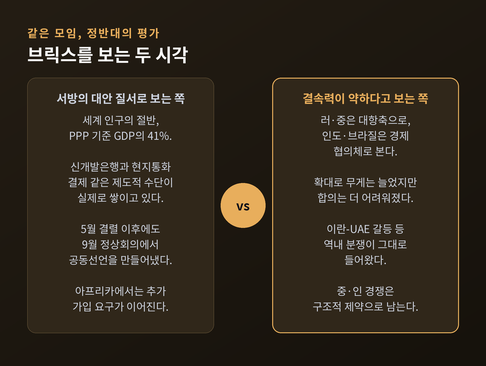
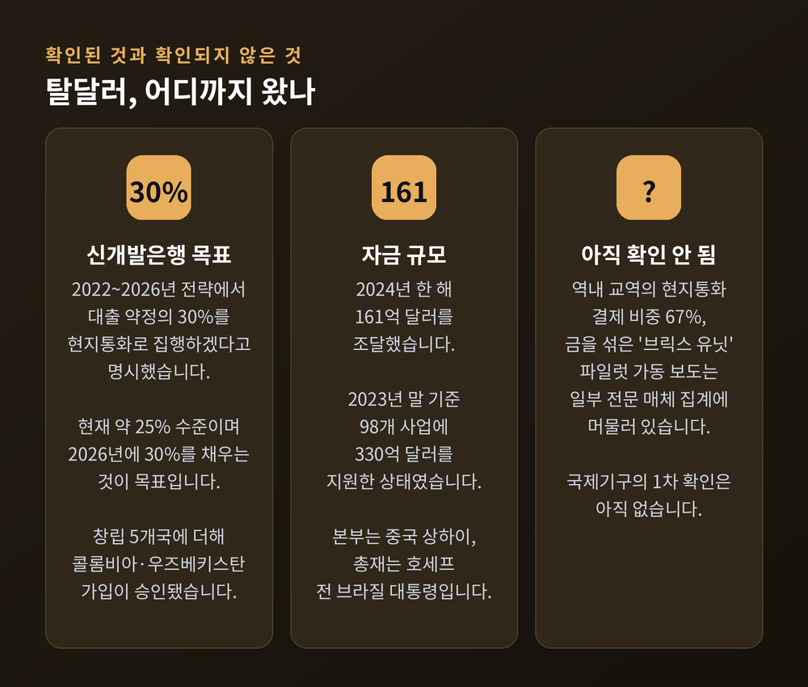
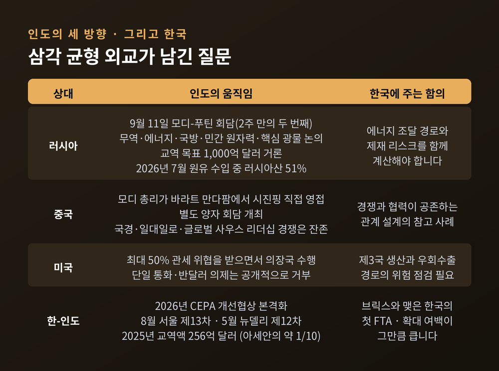

브릭스 정상회의 뉴델리 개최, 11개국이 합의한 것과 못한 것

이번 글에서는 2026년 9월 12일 인도 뉴델리에서 막을 올린 제18차 브릭스 정상회의를 정리해 보겠습니다. 무엇이 합의됐고 무엇이 미결로 남았는지, 그리고 이 장면이 한국에 어떤 질문을 던지는지까지 함께 살펴보겠습니다.
먼저 세 줄로 요약합니다.
- 11개 회원국이 뉴델리 선언 문안에 합의했습니다. 협상은 새벽 4시까지 이어졌습니다.
- 합의의 방식은 "특정 국가를 지목하지 않는다"였습니다. 결속의 증거이자 동시에 한계의 증거입니다.
- 확대된 브릭스는 세계 인구의 절반을 담았지만, 목적에 대한 합의는 아직 담지 못했습니다.
■뉴델리에서 무슨 일이 있었나
제18차 브릭스 정상회의는 9월 12일과 13일 이틀간 인도 뉴델리의 바라트 만다팜 컨벤션 센터에서 열렸습니다.
인도는 2026년 1월 1일 의장국직을 넘겨받았습니다. 창립 회원국으로서 네 번째로 맡는 의장직입니다. 올해는 브릭스가 출범한 지 20년이 되는 해이기도 합니다.
의장국이 내건 주제는 "회복력, 혁신, 협력, 지속가능성을 위한 구축"이었습니다. 비전 문구로는 "인류 우선"을 앞세웠습니다.
참석자 명단은 화려했습니다. 시진핑 중국 국가주석, 블라디미르 푸틴 러시아 대통령, 마수드 페제시키안 이란 대통령이 모두 뉴델리에 왔습니다. 시릴 라마포사 남아프리카공화국 대통령, 압델 파타 엘시시 이집트 대통령, 프라보워 수비안토 인도네시아 대통령, 아비 아머드 에티오피아 총리도 자리를 채웠습니다. 안토니우 구테흐스 유엔 사무총장까지 참석했습니다.
다만 빈자리도 있었습니다. 브라질은 룰라 대통령 대신 마우루 비에이라 외교장관이 참석했습니다. 브릭스라는 이름의 첫 글자를 맡은 나라의 정상이 빠진 것입니다. UAE 역시 대통령이 아닌 아부다비 왕세자가 대표로 나왔습니다.

■새벽 4시까지 이어진 협상, 그리고 뉴델리 선언
이번 회의의 가장 큰 뉴스는 정상들의 사진이 아니라 문서 한 장이었습니다.
11개 회원국 협상단은 9월 11일 저녁부터 다음 날 새벽 4시 무렵까지 문안을 다퉜습니다. 그리고 공동선언, 이른바 뉴델리 선언에 합의했습니다.
합의의 핵심은 표현의 수위였습니다. 선언은 모든 형태의 "도발받지 않은 침략"을 개탄한다고 적었습니다. 그러나 어느 나라의 이름도 적지 않았습니다. 분쟁 해결에 대해서는 "대화와 외교가 앞으로 나아갈 길"이라는 문장을 넣었습니다.
밋밋해 보이는 문장입니다. 그런데 이 밋밋함이 성과였습니다.
불과 넉 달 전인 2026년 5월, 뉴델리에서 열린 브릭스 외교장관 회의는 공동성명을 내지 못했습니다. 의장 성명과 결과문서만 발표하고 끝났습니다. 브릭스 역사상 처음 있는 일이었습니다.
당시 발목을 잡은 것은 서아시아 정세에 관한 문구였습니다. 이란과 UAE가 서로 다른 방향의 규탄 문구를 요구하면서 접점을 찾지 못했습니다. 이번에는 누구도 지목하지 않는 방식으로 그 매듭을 풀었습니다.
모디 총리는 개회 발언에서 "브릭스는 누구를 겨냥한 모임이 아니다"라고 말했습니다. 그리고 글로벌 사우스가 "세계적 위기의 맨 앞줄에 서 있지만 의사결정에서는 맨 뒷줄에 있다"고 지적했습니다. 이 구조를 "특권의 피라미드"에서 "파트너십의 플랫폼"으로 바꾸자는 제안이었습니다.
그는 글로벌 거버넌스 개혁을 위한 10개 제안을 함께 마련하고, 다음 정상회의까지 이를 개혁 로드맵으로 구체화하자고 제의했습니다.

■이 회의가 왜 중요한가 — 숫자로 본 확대 브릭스
브릭스는 더 이상 다섯 나라의 모임이 아닙니다.
현재 정회원은 11개국입니다. 브라질, 러시아, 인도, 중국, 남아공에 더해 이집트, 에티오피아, 이란, 사우디아라비아, UAE가 2024년에 합류했습니다. 인도네시아는 2025년 1월 정회원이 됐습니다.
여기에 파트너국 10개국이 붙어 있습니다. 벨라루스, 볼리비아, 쿠바, 카자흐스탄, 말레이시아, 나이지리아, 태국, 우간다, 우즈베키스탄, 베트남입니다.
규모는 다음과 같습니다. 구매력 평가 기준 세계 GDP의 약 41%를 차지합니다. 같은 기준으로 G7은 약 28%입니다. 명목 달러 기준으로 보면 비중은 28~30% 수준으로 내려가지만, 합계액은 32조 달러를 넘습니다.
인구는 세계의 49.5%, 약 39억 명입니다. 세계 교역에서 차지하는 비중은 약 26%로 집계됩니다.
다만 이 숫자를 읽을 때 주의할 점이 있습니다. 브릭스 내부 GDP에서 중국이 48.5%, 인도가 20.7%를 차지합니다. 두 나라가 전체의 약 70%입니다. 1인당 소득으로 환산하면 G7과의 격차는 여전히 큽니다.
"세계의 절반"이라는 표현은 사실이지만, 그 절반이 균질하지는 않다는 뜻입니다.

■브릭스를 보는 두 시각
이 모임의 성격을 두고 평가는 정반대로 갈립니다. 양쪽 논리를 모두 보시는 편이 좋겠습니다.
서방의 대안 질서로 보는 쪽의 근거는 이렇습니다. 세계 인구의 절반과 PPP 기준 GDP의 41%는 그 자체로 무게입니다. 신개발은행, 현지통화 결제, 결제 인프라 같은 제도적 수단이 실제로 쌓이고 있습니다. 5월 외교장관 회의가 깨졌는데도 9월 정상회의에서 공동선언을 만들어냈다는 점은 자정 능력의 증거로 읽힙니다. 아프리카에서는 추가 가입을 요구하는 목소리도 이어지고 있습니다.
결속력이 약하다고 보는 쪽의 근거도 만만치 않습니다. 미국 시사주간지 타임은 9월 11일 "분열된 브릭스는 미국에 도전이 되지 못한다"는 제목의 글을 실었습니다.
가장 근본적인 문제는 목적이 갈린다는 점입니다. 러시아와 중국은 브릭스를 서방에 대한 대항축으로 봅니다. 반면 인도와 브라질은 경제 협의체로 봅니다. 같은 테이블에 앉아 다른 그림을 그리고 있는 셈입니다.
확대가 결속을 약화시켰다는 분석도 있습니다. 무게는 늘었지만 합의를 만들기는 더 어려워졌습니다. 신규 회원들이 역내 분쟁을 그대로 들고 들어왔기 때문입니다. 이란과 UAE의 갈등이 대표적인 사례입니다.
중국과 인도의 경쟁도 구조적 제약입니다. 국경 분쟁, 글로벌 사우스 리더십을 둘러싼 다툼, 일대일로에 대한 인도의 회의적 시선이 겹쳐 있습니다.
전문가들은 합의 없는 문서가 일상이 되면 이 모임은 기능을 잃는다고 경고합니다. 그래서 이번 뉴델리 선언은 성과인 동시에 경고등이기도 합니다.

■탈달러는 어디까지 왔나
브릭스 하면 따라붙는 말이 탈달러입니다. 실제 진척은 구호보다 훨씬 조심스럽습니다.
우선 브릭스가 추진하는 것은 단일 통화가 아닙니다. 현지통화 결제 확대와 결제 인프라 구축에 가깝습니다. 분석가들은 이를 "실용적 점진주의"라고 부릅니다.
제도적 축은 신개발은행입니다. 2015년 설립돼 본부는 중국 상하이에 있습니다. 총재는 지우마 호세프 전 브라질 대통령입니다. 2023년 초 취임했고, 여성으로서도 전직 국가원수로서도 이 은행의 첫 사례입니다.
신개발은행은 2022~2026년 전략에서 대출 약정의 30%를 회원국 현지통화로 집행하겠다는 목표를 명시했습니다. 현재 포트폴리오의 약 25%가 현지통화 표시이며, 2026년에 30%를 채우는 것이 목표입니다. 회원국은 창립 5개국에 방글라데시, UAE, 이집트, 알제리가 더해졌고 콜롬비아와 우즈베키스탄의 가입이 승인됐습니다.
자금 규모도 작지 않습니다. 2024년 한 해 161억 달러를 조달했습니다. 2023년 말 기준으로 98개 사업에 330억 달러를 지원한 상태였습니다.
여기까지가 확인된 사실입니다. 반면 역내 교역의 현지통화 결제 비중이 67%를 넘었다거나, 금을 섞은 '브릭스 유닛' 파일럿이 가동됐다는 이야기는 일부 전문 매체의 집계와 보도에 머물러 있습니다. 국제기구의 1차 확인은 아직 없습니다. 저는 이 대목은 단정하지 않고 지켜보는 편이 맞다고 생각합니다.
게다가 인도 자신이 브릭스 단일 통화와 반달러 의제를 공개적으로 거부해 왔습니다. 의장국이 브레이크를 밟고 있는 구조입니다.

■미국의 관세 압박이라는 변수
배경에는 미국이 있습니다.
트럼프 대통령은 2024년 11월과 2025년 2월에 걸쳐, 브릭스가 달러를 대체하려 하면 100% 관세를 물리겠다고 경고했습니다. 이후 수위를 높여 달러 파괴를 언급하는 국가에는 150% 관세를 매기겠다고 했고, 경고 이후 "브릭스는 깨졌다"고 주장하기도 했습니다.
인도에 대해서는 별도로 최대 50%의 관세를 위협했습니다. 세계에서 가장 높은 수준에 속합니다.
이 압박의 효과를 두고도 해석은 엇갈립니다. 한쪽에서는 관세가 역효과를 냈다고 봅니다. 인도를 중국 쪽으로 밀어 브릭스의 결속을 오히려 강화시켰다는 것입니다. 다른 쪽에서는 정반대로 봅니다. 압박 탓에 인도가 통화 의제에서 발을 빼면서 브릭스의 어젠다가 후퇴했다는 분석입니다.
전직 인도 외교관 스리쿠마르 메논은 절충적인 관측을 내놓았습니다. 인도가 이번 회의에서 신중한 표현을 쓰겠지만, 핵심 의제 자체를 바꾸지는 않으리라는 것입니다. 실제 뉴델리 선언의 조심스러운 문장들은 이 관측과 크게 어긋나지 않습니다.
■인도의 삼각 균형 외교
이번 회의에서 가장 흥미로운 관전 포인트는 인도의 처신이었습니다.
정상회의 하루 전인 9월 11일, 모디 총리는 푸틴 대통령과 양자 회담을 열었습니다. 두 사람에게는 2주 만의 두 번째 만남이었습니다. 푸틴은 새벽에 팔람 공군기지로 들어와 3일 일정을 소화했습니다. 2022년 우크라이나 전쟁 이후 두 번째 인도 방문입니다.
의제는 넓었습니다. 무역, 에너지, 국방에 더해 민간 원자력, 비료, 핵심 광물, 제조업, 철도, 철강, 우주, 인력 이동까지 올랐습니다. 교역 목표로는 1,000억 달러가 거론됐습니다. 우크라이나 전쟁 종식에서 인도가 중재 역할을 할 가능성도 대화에 나왔습니다.
에너지 의존은 숫자로도 확인됩니다. 2026년 7월 인도 원유 수입에서 러시아산 비중은 51%로 사상 최고치를 기록했습니다. 중동 공급 차질이 인도 정유사의 선택지를 좁힌 결과입니다.
그러면서 모디 총리는 바라트 만다팜 입구에서 시진핑 주석을 직접 맞았습니다. 별도 양자 회담도 열렸습니다.
한편으로는 최대 50% 관세를 물리겠다는 미국의 압박을 받는 중입니다.
예전의 인도는 비동맹이라는 이름으로 거리를 두는 쪽이었습니다. 지금의 인도는 세 방향 모두와 악수하며 각각에서 실익을 챙기는 쪽입니다. 이것을 전략적 자율성이라 부를지, 줄타기라 부를지는 보는 사람에 따라 다를 것입니다.

■한국에는 무엇을 남기나
이번 정상회의와 한국을 직접 연결한 보도는 찾기 어려웠습니다. 아래는 확인된 사실 위에 얹은 해석이라는 점을 먼저 밝힙니다.
확인된 사실부터 보겠습니다. 한국과 인도는 2026년 CEPA 개선협상을 본격화했습니다. 제13차 협상이 2026년 8월 서울에서 열렸습니다. 이 협상은 2016년 시작됐다가 이견으로 멈춰 섰고, 2026년 4월 정상회담을 계기로 재개됐습니다. 제12차는 5월 뉴델리에서 열렸습니다. 상품과 서비스 시장 개방, 원산지 규정, 공급망, 전략산업 협력 등 6개 분야가 테이블에 올라 있습니다.
2025년 한국과 인도의 교역액은 256억 달러였습니다. 아세안과 비교하면 약 10분의 1 수준입니다. 뒤집어 말하면 그만큼 여백이 크다는 뜻이기도 합니다. 참고로 한-인도 CEPA는 한국이 브릭스 국가와 맺은 첫 자유무역협정입니다.
여기서 이어지는 함의는 세 가지로 정리됩니다.
첫째, 브릭스 11개국 가운데 인도, 인도네시아, 브라질, 이집트, UAE는 한국 수출기업의 신흥시장과 그대로 겹칩니다. 이 모임의 논의는 남의 일이 아닙니다.
둘째, 현지통화 결제 확대는 결제와 환헤지 실무에 영향을 줄 수 있습니다. 다만 단일 통화가 아닌 점진적 변화이므로, 단기 충격보다는 중장기 관찰 과제에 가깝습니다.
셋째, 미국의 대브릭스 관세 압박은 제3국 생산과 우회수출 경로의 위험으로 번질 수 있습니다. 공급망 지도를 다시 펼쳐 볼 시점입니다.
■앞으로의 관전 포인트
세 가지를 지켜보시면 좋겠습니다.
하나, 모디 총리가 제안한 거버넌스 개혁 10개 제안이 다음 정상회의까지 실제 로드맵으로 굳어지는지 여부입니다. 선언은 쉽고 이행은 어렵습니다.
둘, 신개발은행의 현지통화 대출 비중이 목표대로 30%에 닿는지입니다. 이 숫자는 구호가 아니라 회계로 확인되는 지표입니다.
셋, 이란과 UAE처럼 서로 부딪히는 회원국들이 다음 문서에서도 합의에 이를 수 있는지입니다. 이번 한 번의 합의로 구조가 바뀌었다고 보기는 이릅니다.
아직 확인되지 않은 것도 많습니다. 뉴델리 선언 전문의 세부 조항, 다음 의장국, 신규 가입국 발표 여부는 이 글을 쓰는 시점에 공개되지 않았습니다. 이 부분은 후속 보도를 기다려야 합니다.
정리하면 이렇습니다.
브릭스는 세계 인구의 절반을 모았지만, 그 절반이 무엇을 함께 원하는지는 아직 한 문장으로 적지 못했습니다. 새벽 4시까지 이어진 협상 끝에 나온 문장이 "누구도 지목하지 않는다"였다는 사실이 이 모임의 현재 좌표를 가장 정확히 보여줍니다.
그래서 이번 회의를 성공이라 부를 수 있느냐고 물으신다면, 저는 "깨지지 않았다는 점에서는 성공"이라고 답하겠습니다. 다음 질문은 그다음 회의가 답할 것입니다.
■참고한 주요 보도
- Sunday Guardian Live 「BRICS Nations Reach Consensus on Joint Statement After Talks That Stretched Till 4 AM」 (2026-09-12)
- Organiser 「BRICS Summit 2026: New Delhi Declaration to be issued today」 (2026-09-12)
- ThePrint 「BRICS Summit 2026 LIVE UPDATES: Day-1 to begin with closed session at 2 PM」 (2026-09-12)
- Tribune India 「PM Modi welcomes Chinese President Xi Jinping at Bharat Mandapam」 (2026-09-12)
- Business Standard 「Xi Jinping arrives in New Delhi for BRICS summit, set to meet PM Modi」 (2026-09-12)
- Al Jazeera 「Putin, Pezeshkian in India for BRICS summit clouded by Iran and Ukraine war」 (2026-09-11)
- Washington Times 「BRICS leaders gather in New Delhi as wars and rivalries strain the expanded bloc」 (2026-09-11)
- TIME 「Why a Divided BRICS Poses No Challenge to America」 (2026-09-11)
- Deccan Chronicle / Deccan Herald 「List of world leaders attending the 18th BRICS Summit in New Delhi」 (2026-09-11)
- The Week 「Modi-Putin talks begin ahead of BRICS Summit」 (2026-09-11) · Dawn · Business Recorder (2026-09-11)
- Deccan Chronicle 「Easier Said Than Done, BRICS Treads Carefully on De-Dollarisation」 (2026-09)
- InsightsOnIndia 「India's opportunity to put BRICS back together」 (2026-09-08)
- Manorama Yearbook 「New Delhi to host 18th BRICS Summit on September 12, 13」 (2026-08-28)
- 인도 의장국 공식 사이트 brics2026.gov.in · MYBharat 「BRICS New Delhi 2026」
- BusinessToday 「BRICS countries have a huge share of the world's population」 (2026-09-11) · Statistics of the World 「BRICS Economy 2026」
- Daily News Egypt 「NDB expands to 11 members, raises $16.1bn in 2024, says Rousseff」 (2025-07-07) · TV BRICS (2025-07-11) · Asia Times (2025-06)
- NBC News (2024-11) · Business Standard (2025-02-21) · Outlook India (2026) · Geopolitical Economy Report (2025-08-16)
- 아시아투데이 (2026-09-11) · 아시아경제 (2026-09-12) · 신화통신 한국어판 (2026-09-12)
- 한-인도 CEPA: 아시아투데이·EBN·헤럴드경제 (2026-08-19)
- 전체 출처 목록과 발행일, 수치가 엇갈리는 지점의 정리는 같은 폴더의
research.md에 담겨 있습니다.